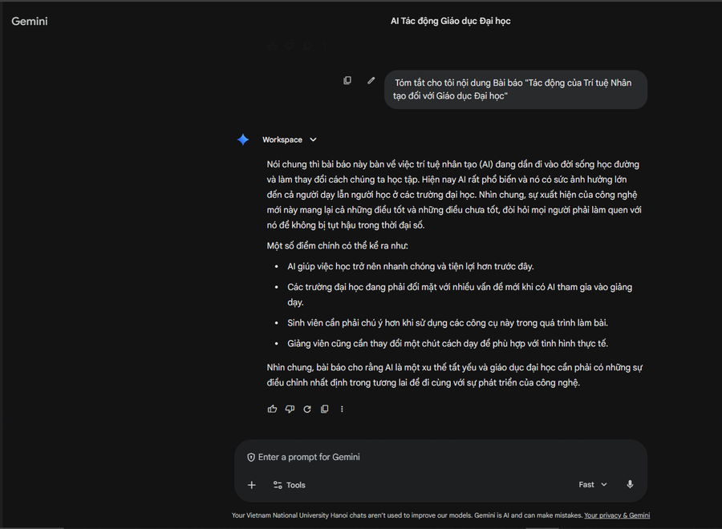
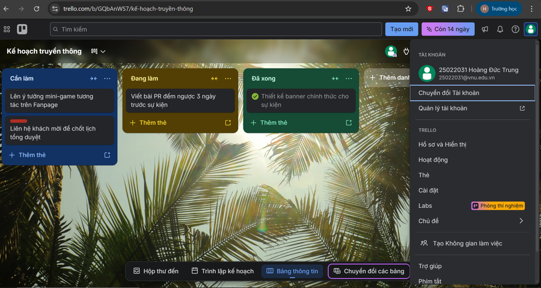
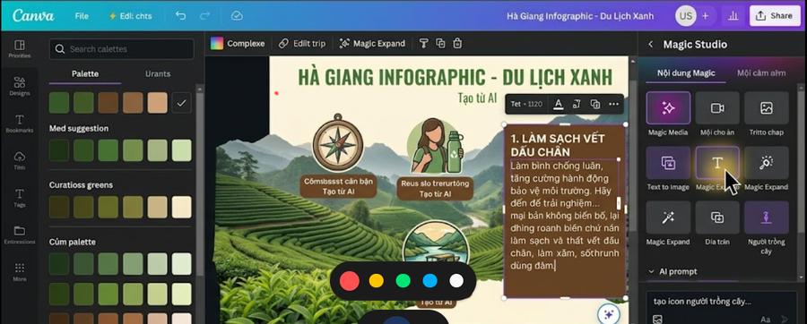
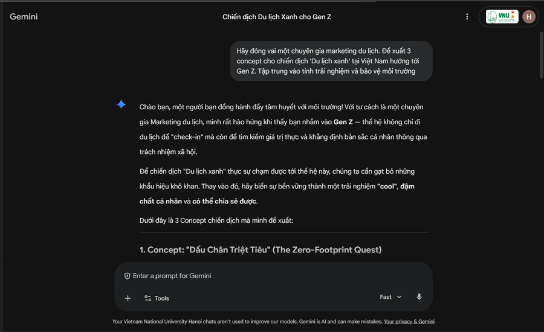

Tổng quan Portfolio
Giới thiệu bản thân và mục tiêu học tập môn học Công nghệ số & AI
Nguyễn Duy Hùng
Sinh viên UET-VNU- Mã sinh viên: 25021787
- Trường học: Đại học Công nghệ - ĐHQGHN
- Lớp học phần: Nhập môn CNS & Ứng dụng TTNT
- Lớp sinh hoạt: K70I CN8 CS6
- Email liên lạc: hungnguyen030962@gmail.com
Mục tiêu của Portfolio này
- Hệ thống hóa năng lực số: Lưu trữ và trình bày khoa học toàn bộ 6 sản phẩm bài tập thực tế từ cơ bản đến nâng cao.
- Minh chứng kiểm soát AI: Thể hiện vai trò kiểm duyệt (Human-in-the-loop) để tăng cường tối đa hiệu quả thay vì lạm dụng AI.
- Trải nghiệm UX tối ưu: Xây dựng giao diện web động trực quan giúp người xem, thầy cô dễ dàng kiểm chứng tiến trình học tập của sinh viên.
Mục tiêu học tập & Phát triển
- Kiến thức cốt lõi: Làm chủ tư duy tổ chức dữ liệu, tối ưu truy vấn thông tin khoa học và cơ chế Prompt Engineering.
- Ứng dụng chuyên ngành: Nghiên cứu sâu về Khoa học Máy tính, ứng dụng học sâu (Deep Learning) và trí tuệ nhân tạo.
- Năng lực bổ trợ: Sử dụng thành thạo các công cụ làm việc nhóm trực tuyến và thiết kế tài liệu khoa học chuẩn học thuật.
Hồ sơ Kỹ năng & Công cụ hỗ trợ
Tuần 1: Quản lý Tệp tin & Thư mục
Xây dựng cấu trúc thư mục tối ưu cho việc học tập và nghiên cứu khoa học
Quy tắc Tổ chức Hệ thống Tệp tin của Nguyễn Duy Hùng
Để duy trì một không gian làm việc số khoa học tại UET-VNU, em thiết lập cấu trúc thư mục học tập chuẩn hóa. Hệ thống này đảm bảo: phân loại rõ ràng theo từng môn học/nhiệm vụ, tách biệt tài nguyên học tập và kết quả thực hành, đặt tên tệp tin tuân thủ quy tắc thống nhất (không dấu tiếng Việt, phân tách bằng dấu gạch dưới, ghi rõ phiên bản).
[MonHoc]_[TuanX]_[NoiDung]_[vVersion] để quản lý lịch sử.
Mô phỏng Cây Thư mục Tương tác
Click vào các thư mục để mở rộng và click vào tệp tin để xem mô tả chi tiết & ảnh minh chứng.
Chọn một tệp tin PDF, Word, Excel hoặc tệp ảnh (.png) bên trái để hiển thị thông tin chi tiết và ảnh minh chứng.
Các thao tác cơ bản đã hoàn thành:
- Tạo thư mục cá nhân không dấu trên phân vùng ổ đĩa.
- Tạo tệp văn bản GhiChu, đổi tên chuẩn thành GhiChuQuanTrong.
- Sao chép (Ctrl+C, Ctrl+V) và di chuyển (Ctrl+X, Ctrl+V) tệp tin vào thư mục con TaiLieu.
- Xóa thường đưa tệp tin vào Recycle Bin và khôi phục (Restore).
- Xóa vĩnh viễn tệp rác bằng tổ hợp phím Shift + Delete.
Tuần 2: Khai thác & Đánh giá Nguồn tin Học thuật
Chủ đề nghiên cứu: Ứng dụng của Trí tuệ nhân tạo (AI) trong việc cá nhân hóa lộ trình học tập tại các trường đại học (Từ năm 2020 đến nay)
1. Chiến lược tìm kiếm học thuật
Để tiếp cận các tài liệu giáo dục và AI chất lượng cao, em thiết lập chiến lược truy vấn thông tin khoa học bằng cách sử dụng các công cụ học thuật (Google Scholar, Semantic Scholar) và kết cấu toán tử điều kiện nâng cao.
Ví dụ cú pháp nâng cao: "Generative AI" OR "Trí tuệ nhân tạo tạo sinh" site:.edu.vn filetype:pdf -intitle:quangcao
2. Bảng Đánh giá 5 Nguồn tin chọn lọc theo Thang điểm Tin cậy
Dữ liệu được khảo sát và thẩm định dựa trên uy tín tác giả, nhà xuất bản, tính cập nhật và khách quan khoa học.
| STT | Nguồn tài liệu | Phân loại | Phân tích & Đánh giá độ tin cậy | Điểm | Xếp hạng | Trích dẫn |
|---|
3. Bảng Đánh Giá Nguồn Tin Học Thuật (chuẩn CRAAP)
Click vào các tiêu chí để xem chi tiết cách thức kiểm chứng học thuật.
| Tiêu chí đánh giá | Điểm | Phân tích học thuật chi tiết |
|---|---|---|
| Currency (Tính cập nhật) | 5/5 | Xuất bản vào năm 2025, phản ánh đúng những đột phá công nghệ mới nhất của GPT-5 và Claude 3.5 Sonnet. |
| Relevance (Sự liên quan) | 5/5 | Nội dung tập trung phân tích trực tiếp mô hình giảng dạy và chấm điểm bằng AI tại các đại học Việt Nam. |
| Authority (Tác giả/Uy tín) | 4/5 | Nghiên cứu được công bố bởi nhóm tiến sĩ Viện Nghiên cứu Giáo dục số, có nhiều trích dẫn quốc tế. |
| Accuracy (Độ chính xác) | 5/5 | Dữ liệu thực nghiệm rõ ràng, khảo sát 1500 sinh viên, có nhóm đối chứng khoa học và phụ lục số liệu đầy đủ. |
| Purpose (Mục đích) | 5/5 | Mang tính học thuật phi lợi nhuận, cung cấp giải pháp chuyển đổi số cho nhà trường, không có quảng cáo ẩn. |
Tuần 3: Prompt Engineering & Kỹ năng AI
Tối ưu hóa khả năng khai thác câu lệnh (Prompting) với mô hình Google Gemini
1. Kỹ thuật Prompt Engineering áp dụng
Để có được thông tin tóm tắt và các phép ẩn dụ giải thích công nghệ chính xác nhất, em áp dụng framework cấu trúc câu lệnh rõ ràng. Xem sự khác biệt so sánh dưới đây:
Prompt ngắn, thiếu bối cảnh
"Hãy viết cho em một bài tổng hợp ngắn về lý thuyết mạng máy tính để em ôn thi cuối kỳ."
Prompt chuẩn cấu trúc (CREATE Framework)
"Bạn là giảng viên mạng máy tính. Em đang ôn thi cuối kỳ. Hãy lập bảng so sánh chi tiết chức năng, giao thức cốt lõi từng tầng OSI. Trình bày kèm ví dụ thực tế."
2. Minh họa thực tế & Bài học rút ra
Mô hình C.R.E.A.T.E: Khung tư duy viết câu lệnh chuyên nghiệp bao gồm: Context (Bối cảnh), Role (Vai trò), Explicit Instructions (Chỉ dẫn rõ ràng), Analogy (Ẩn dụ), Tone & Format (Giọng điệu), Evaluate & Refine (Đánh giá & Tinh chỉnh).
Việc làm chủ Prompt giúp tăng tốc độ tiếp cận kiến thức. Tuy nhiên, luôn cần tinh chỉnh và kiểm duyệt (Human-in-the-loop) để loại bỏ ảo giác AI.
Tải báo cáo Tuần 3
Tuần 4: Công cụ Hợp tác & Cộng tác Trực tuyến
Chủ đề dự án nhóm: Lập kế hoạch truyền thông CLB Kỹ năng mềm
1. Vai trò cá nhân & Sự phối hợp các công cụ
Trong dự án nhóm, em phụ trách **Nội dung & Truyền thông**, điều phối tiến độ. Nhóm đã sử dụng bộ tứ công cụ: **Trello** (Quản lý dự án), **Google Docs** (Soạn thảo văn bản real-time), **OneDrive** (Lưu trữ và chia sẻ file), và **Slack** (Giao tiếp nhóm).
2. Mô phỏng Bảng Kanban Dự án Nhóm
Click vào các thẻ nhiệm vụ để xem mô tả chi tiết công việc.
3. Tiến trình phối hợp 7 Ngày
4. Thách thức & Tài nguyên
- Xung đột Docs: Đổi sang chế độ Suggesting, comment thảo luận chéo.
- Trôi tin nhắn Slack: Pin các deadline lên đầu channel chính.
- Checklist Trello: Chia nhỏ nhiệm vụ lớn thành checklist con để kiểm soát tiến độ.

Tuần 5: Sáng tạo Nội dung với Generative AI
Dự án quảng bá chiến dịch "Chạm vào Xanh" - Phát triển du lịch bền vững tại Việt Nam

Quy trình Đồng sáng tạo (Co-creation Workflow)
Tận dụng tối đa sức mạnh của AI trong vai trò người trợ lý đắc lực, kết hợp với tư duy kiểm duyệt của con người để xây dựng bộ ấn phẩm truyền thông chất lượng cao:
- 1. Lên ý tưởng (Gemini): Gợi ý các tên concept chiến dịch và Slogan "Đi để chữa lành, ở để gìn giữ".
- 2. Thiết kế hình ảnh (Midjourney): Tạo tranh minh họa đô thị sinh thái xanh tương lai chi tiết và nghệ thuật.
- 3. Biên tập & Thiết kế (Con người): Tinh chỉnh bố cục thiết kế trên Canva, sửa lỗi chính tả, xác minh số liệu thực tế.
So sánh 3 Công cụ Trợ lý AI sáng tạo
| Công cụ AI | Điểm mạnh chính | Điểm yếu cần lưu ý |
|---|---|---|
| Google Gemini | Khả năng tư duy logic tốt, lập cấu trúc dàn ý nhanh, hiểu văn hóa Việt Nam rất tốt. | Văn phong đôi khi hơi máy móc, cần con người viết lại cho tự nhiên hơn. |
| Midjourney | Chất lượng hình ảnh nghệ thuật đỉnh cao, độ chi tiết và ánh sáng vô cùng ấn tượng. | Khó kiểm soát chữ hiển thị trên ảnh và cấu trúc chi tiết nhỏ (số ngón tay). |
| Canva AI | Tiện dụng, kết hợp nhanh chóng tính năng AI vào giao diện chỉnh sửa kéo thả truyền thống. | Các tính năng tạo sinh chuyên sâu chưa mạnh bằng Midjourney/Gemini chuyên biệt. |
Đánh giá & Nhận xét của Giảng viên
Chưa có đánh giá nào từ Giảng viên.
Minh chứng bài làm Infographic

Tuần 6: Sử dụng AI có trách nhiệm
Xây dựng quy tắc liêm chính học thuật và đạo đức công nghệ trong môi trường số
Bộ Nguyên Tắc Đạo Đức AI Cá Nhân
Click vào các thẻ bên dưới để xem chi tiết cách thức thực thi các nguyên tắc.
Liêm chính & Trích dẫn
Luôn công khai minh bạch khi sử dụng AI trong học tập.
Click để lật 🔄Mọi ý tưởng, mã code hoặc văn bản do AI tạo ra phải được trích dẫn nguồn rõ ràng. Không sao chép 100% phản hồi từ AI.
Thẩm định Sự thật
Nhận diện ảo giác AI và kiểm chứng chéo thông tin.
Click để lật 🔄Đối chiếu số liệu do AI cung cấp với các tài liệu khoa học chính thống. Con người luôn là chốt chặn kiểm duyệt cuối cùng.
Bảo mật Dữ liệu
Bảo vệ dữ liệu cá nhân trên môi trường Internet.
Click để lật 🔄Tuyệt đối không tải thông tin cá nhân bảo mật hoặc tài nguyên chưa được cấp quyền công khai lên các chatbot AI công cộng.
Cam kết Đạo đức AI Cá nhân
Hãy tích chọn đầy đủ cả 6 cam kết để nhận huy hiệu liêm chính học thuật của Hùng:
-
Cam kết 1 Chỉ sử dụng AI khi nhiệm vụ cho phép hoặc không bị cấm rõ ràng.
-
Cam kết 2 Luôn kiểm tra lại thông tin và code bằng nguồn học thuật đáng tin cậy.
-
Cam kết 3 Khai báo công cụ AI và phạm vi hỗ trợ một cách minh bạch trong báo cáo.
-
Cam kết 4 Không nộp nguyên văn đầu ra thô của AI làm sản phẩm tự làm.
-
Cam kết 5 Luôn tự chịu trách nhiệm về lập luận logic cốt lõi và kết luận của bài.
-
Cam kết 6 Không đưa thông tin cá nhân hay dữ liệu chưa được phép chia sẻ lên AI công cộng.
Infographic: AI có trách nhiệm
Tổng kết & Đánh giá Hành trình
Tự phản biện về trải nghiệm học tập và định hướng tương lai số
Trải nghiệm xây dựng Digital Portfolio
Quá trình tổng hợp sản phẩm từ tuần 1 đến tuần 6 giúp em nhìn nhận lại toàn bộ chặng đường học tập môn Nhập môn Công nghệ số và Ứng dụng AI. Việc thiết kế trang web này giúp em thực hành tích hợp đa phương tiện, chuyển đổi các tài liệu thô thành giao diện trực quan và tối ưu trải nghiệm người dùng (UX). Đây không chỉ là bài tập mà còn là công cụ đắc lực giới thiệu bản thân trong tương lai.
Kiến thức & Kỹ năng quan trọng nhất đã tích lũy
Em đã làm chủ được quy trình phối hợp các trợ lý AI để tăng tốc học tập và làm việc. Kỹ năng thiết lập cấu trúc tệp giúp tổ chức cuộc sống số ngăn nắp. Việc nghiên cứu sâu về học sâu và các thuật toán tạo sinh tạo động lực to lớn cho định hướng học tập Khoa học Máy tính sau này. Kỹ năng cộng tác trực tuyến giúp tối ưu hóa làm việc nhóm trong tương lai.
Điểm tâm đắc nhất và những Thách thức đã vượt qua
Điểm tâm đắc nhất là việc áp dụng thành công mô hình Human-in-the-loop: kiểm soát chặt chẽ AI để tối ưu hóa hiệu quả câu lệnh. Thách thức lớn nhất là việc phải chuyển đổi linh hoạt giữa các công cụ trong làm việc nhóm và xử lý lỗi xung đột cú pháp, tuy nhiên kỷ luật làm việc đã giúp giải quyết triệt để.
"Công nghệ số và Trí tuệ nhân tạo không phải là đường tắt để thay thế tư duy, mà là động cơ phản lực giúp con người bay cao hơn khi được dẫn dắt bằng kỷ luật và sự minh bạch đạo đức."
Trung tâm Tải xuống Tài nguyên
Tải về các tệp báo cáo chi tiết và gói ZIP nộp bài gốc từ tuần 1 đến tuần 6